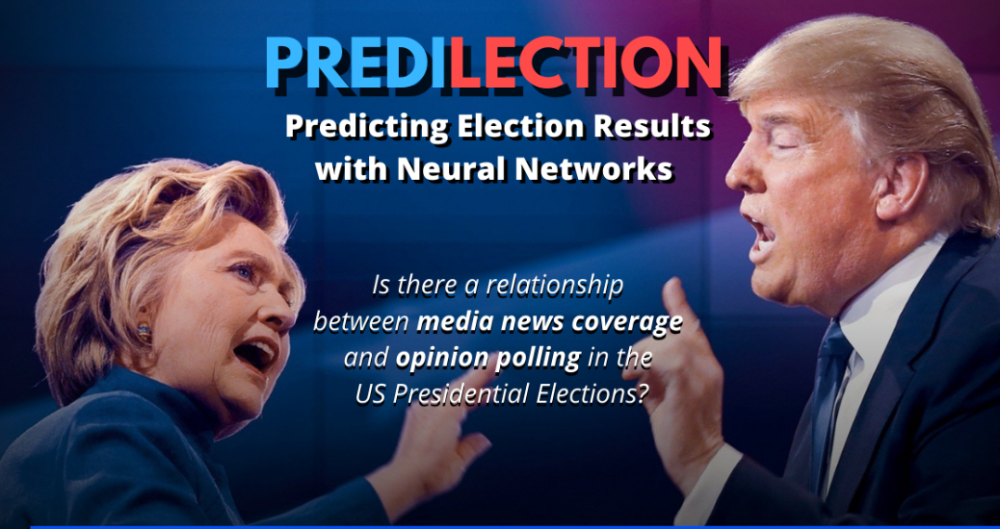
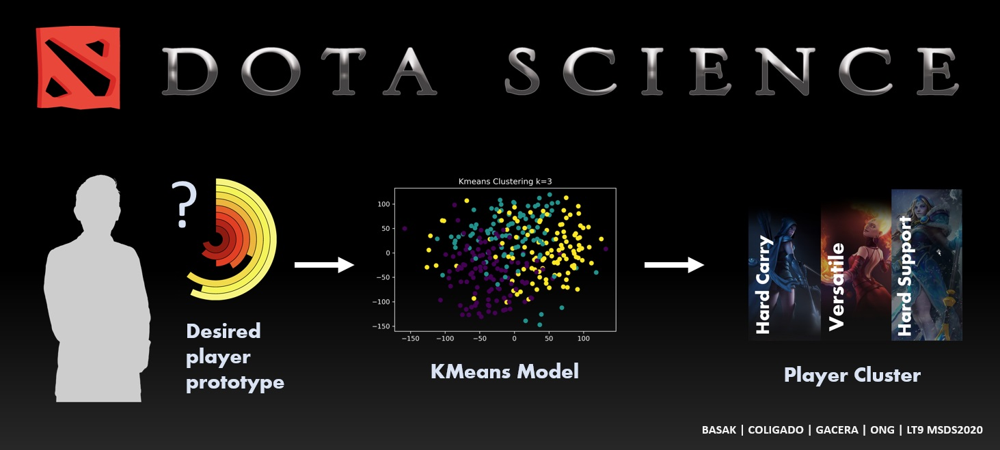
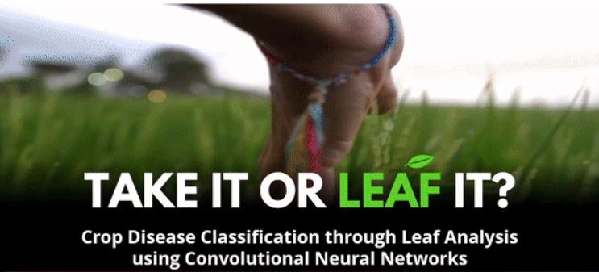

About
Jishu is a graduating student of Master of Science in Data Science (MSDS) at the Asian Institute of Management (AIM).
He has done several projects on various fields of data science and artificial intelligence with his recent work involving a
decision support tool for Global Performance Analysis of Ecommerce Product Packaging for MSME's.
His experience in Asian Institute of Management involved exploring versatile industrial level topics were Data Science is applicable,
mentoring his classmate from MSDS sister branch, participating and winning national and
global level hackathons to name a few. Prior to doing his master's, he has worked as a Data Analyst for select top startup(India and London)
in the IT industry for a year. His key interest lies in creating dashboard having Machine learning application, Natural Language Processing,
Geo Spatial analysis and Image Processing. From a non academic perspective, he loves talking and ideating about different current and
futuristic potential innovations, road tripping and wanderlusting around exotic places, playing bass guitar and keys and watching
mindbending/thriller netflix series.
Interests
- Artificial Intelligence
- Machine Learning
- Data Engineering
- Data Applications
Education
- Master of Science in Data Science
Asian Institute of Management (2020)
- Bachelor of Technology in Electrical Engineering
Pandit Deendayal Petroleum University (2013 - 2017)
In this project, which is one componenet of my Climate terminal project, I created a dashboard using Plotly and Dash, which visualizes Total number of Tweets, Sentimental Analysis and total work count associated with hashtags in Twitter whichh is defined by the user. In this project, I used popular hashtags that address the notion of climate change.
Tags: Dash, Plotly, Sentiment Analysis, Docker, SQL, Twitter API

In this project, we created a Decision Support Tool using Artificial Neural Network and Amazon Web Service, to predict the results of Elections based on People's sentiments,
captured from various articles, news sources and blog. We used GDELT project as our data source, which monitors the world's broadcast, print, and web news from nearly every corner
of every country in over 100 languages and identifies the people, locations, organizations, themes, sources, emotions, counts, quotes, images and events driving our global
society every second of every day, creating a free open platform for computing on the entire world. Our scope is limited to USA elections.
Tags: AWS, Deep Learning, Artificial Neural Network, Tensorflow, Python

This study utilizes the unsupervised machine learning algorithm KMeans Clustering to uncover different "styles" of play from data collected from all 317 verified tournament players from Dotabuff.
Tags: Unsupervised clustering, Kmeans, PCA, Sci-kit Learn

This Deep Learning project focuses in one of the major food security issues in Agriculture industry, viz, Crop Reduction due to diseases.
My team created an algorithm using Convilution Neural Network where we are able to predict whether a crops will get deteriorated due to disease with a success rate of 92%.
Tags: Deep Learning, Convolution Neural Network, Tensorflow, Python
Using the machine learning model XGBoost Classifier, we were able to determine whether or not a given movie will make money in the box office prior to its release date using data scraped from Box Office Mojo.
Tags: Machine learning, Classification, XGBoost, Sci-kit Learn, Python